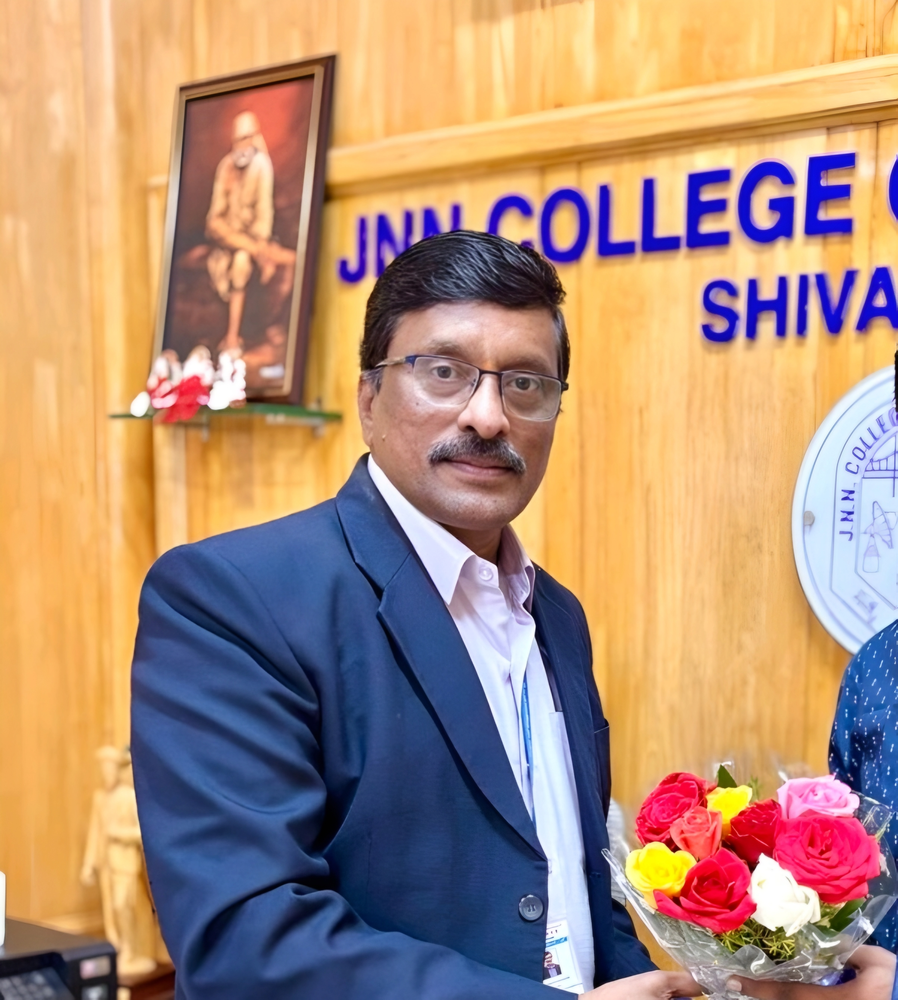
Dr. Vijaya Kumar
Principal & Chairman, JNNCE
B.Tech., M.Tech., Ph.D
Dr. Vijaya Kumar brings over 33 years of academic excellence and 5 years of industrial expertise, leading the institution towards innovation, research excellence, and global recognition.
Dr. Y Vijaya Kumar is an accomplished academic leader with extensive experience as Principal across multiple engineering institutions. He served as Professor & Principal at GM Institute of Technology, Davangere (2019-2023) for 3.5 years, and prior to that as Professor & Principal at Sri Sairam College of Engineering, Bengaluru (2013-2019) for over 6 years. He also held the position of Professor & Principal/Dean at JAIN University's School of Engineering and Technology (2009-2013). With a total academic experience of 33 years, a Ph.D. in Operations Research & Statistical Quality Control, and having guided 11 doctoral candidates, he has been recognized with multiple awards including the Best Principal Award in 2017 and has supervised numerous research projects focused on building institutions through academic excellence, research, placement, and innovation.
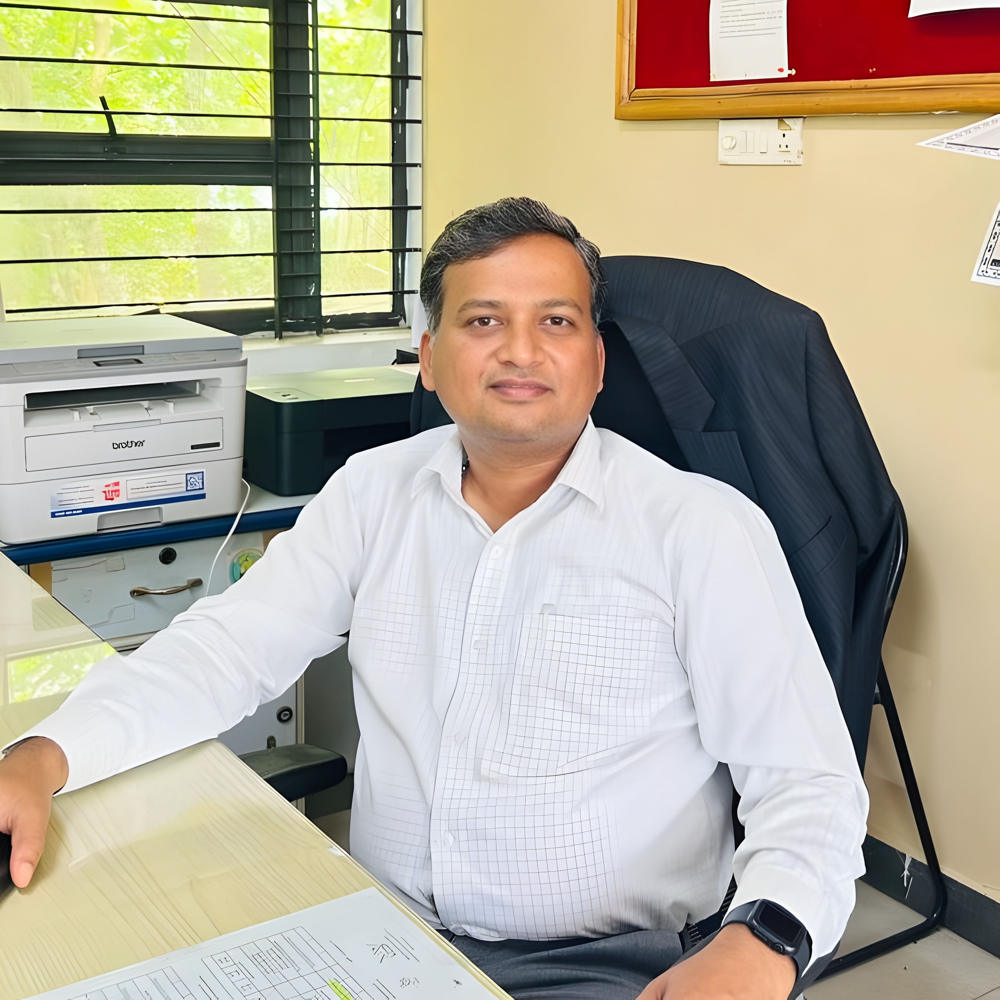
Dr. Hemanth Kumar
Associate Prof. & Director - MCA
M.Sc(CS)Ph.D
Dr. Hemanth Kumar the MCA department with a focus on innovative teaching methodologies and cutting-edge research.
Dr. Hemanth Kumar received the B.Sc degree (Electronics, Mathematics & Computer Science) in 2004 and the M.Sc degree(Computer Science) in 2006 from SRNMN College of Applied Science, Shivamogga and Kuvempu University respectively. He have obtained the Ph. D degree from Bangalore University. He is currently working as Assistant Professor in the Department of Master of Computer Applications, J N N College of Engineering (JNNCE), Shivamogga. He is involved in research and teaching MCA students and has more than 19 years of teaching experience. He has published 10 papers in International Journals and Conferences. His current research lies in the area of Wireless Sensor Networks and IoT.
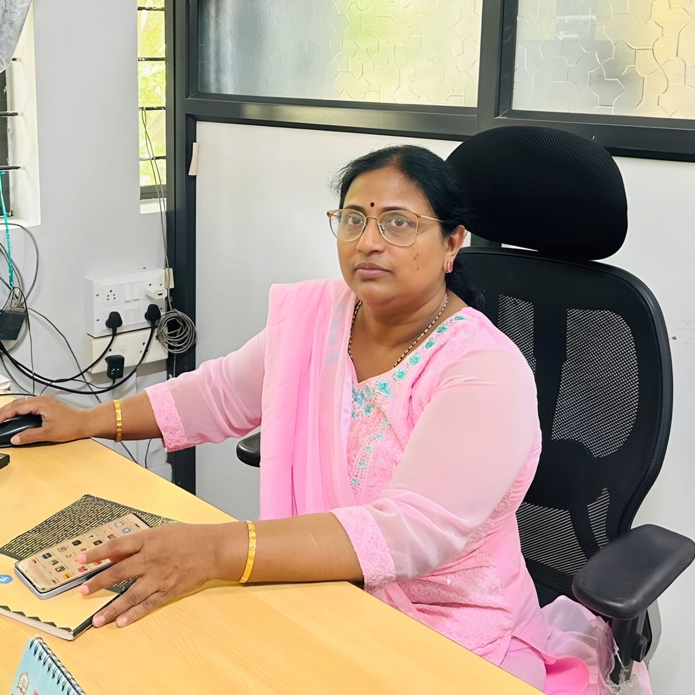
Dr. Sunitha G P
Associate Professor
MCA, M.Tech,Ph.D
Dr. Sunitha G P is a highly experienced Associate Professor in Computer Science with over 25 years of teaching expertise at JNN College of Engineering, Shivamogga . She holds a Ph.D. in Computer Science and has contributed to research through multiple international journal publications, including SCI-indexed work. She is a recognized Ph.D. guide under VTU and actively participates in academic bodies such as BoE. With strong academic leadership and research involvement, she is committed to delivering quality education and mentoring students effectively.
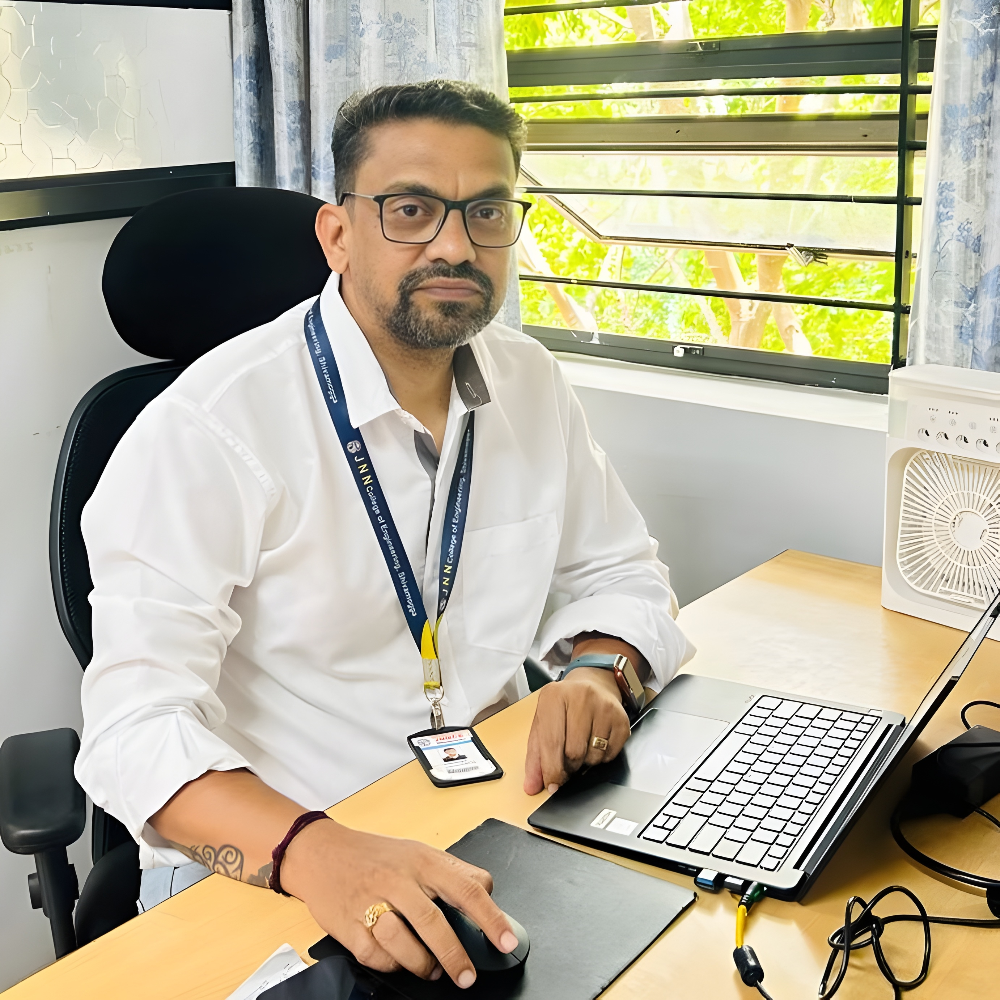
Mr. Santhosh S.G
Associate Professor
MCA(Ph.D)
Mr. Santhosh S.G is an experienced Associate Professor in Computer Science with over two decades of teaching and academic experience, currently serving at JNN College of Engineering, Shivamogga . He has strong expertise in Artificial Intelligence, Machine Learning, and Document Image Processing, with active research contributions in bilingual text classification and intelligent systems. He has held key academic roles including IQAC and NBA coordination, contributing significantly to institutional development and quality assurance. With ongoing Ph.D. research and a commitment to innovation, he focuses on delivering research-driven, industry-relevant education to students.
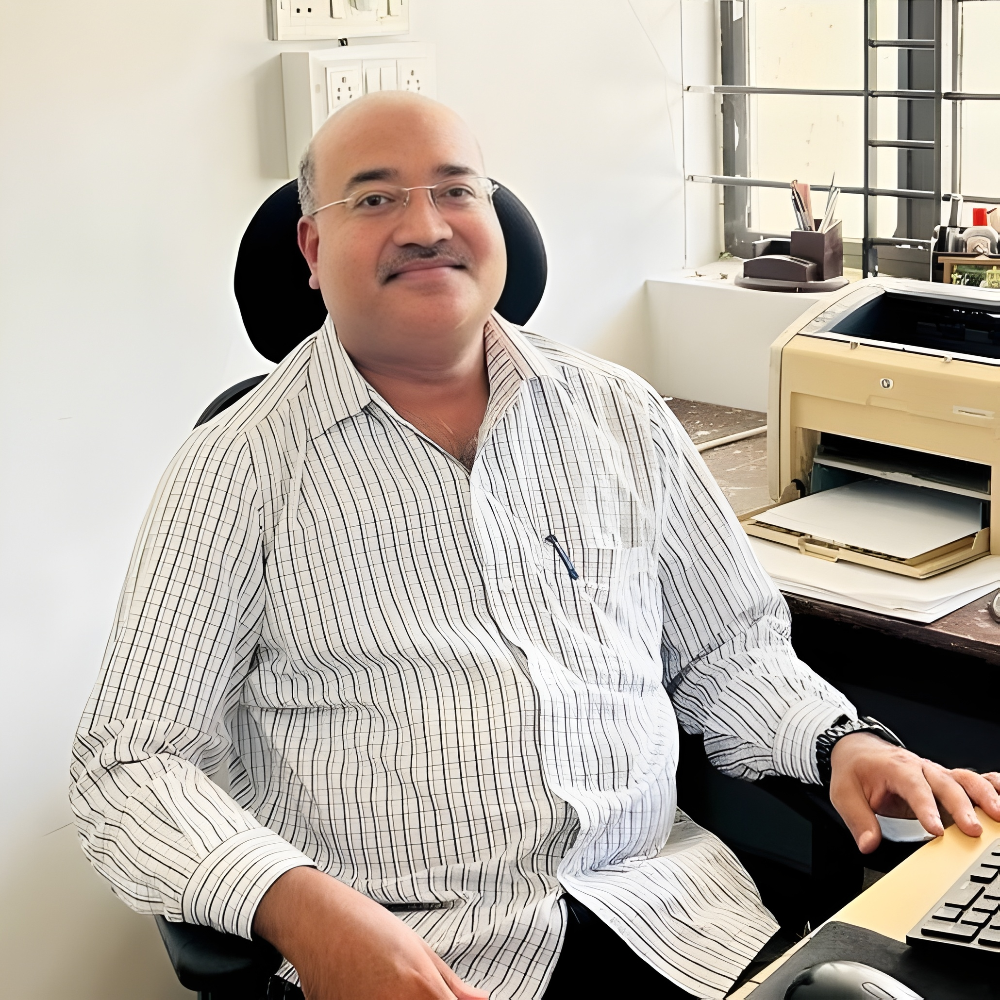
Dr. Raghavendra S G
Assistant Professor
MCA, Ph.D, KSET
Dr. Raghavendra S P is an experienced Assistant Professor with over 21 years of teaching and 10 years of research expertise in Computer Science, currently serving at JNN College of Engineering, Shivamogga . He holds a Ph.D. and has strong research contributions in areas such as Machine Learning, Image Processing, Pattern Recognition, and Computer Vision. With numerous journal and conference publications, including Scopus and SCI-indexed work, he actively contributes to academic research and innovation. He is dedicated to mentoring students, developing curricula, and delivering research-oriented, industry-relevant education.
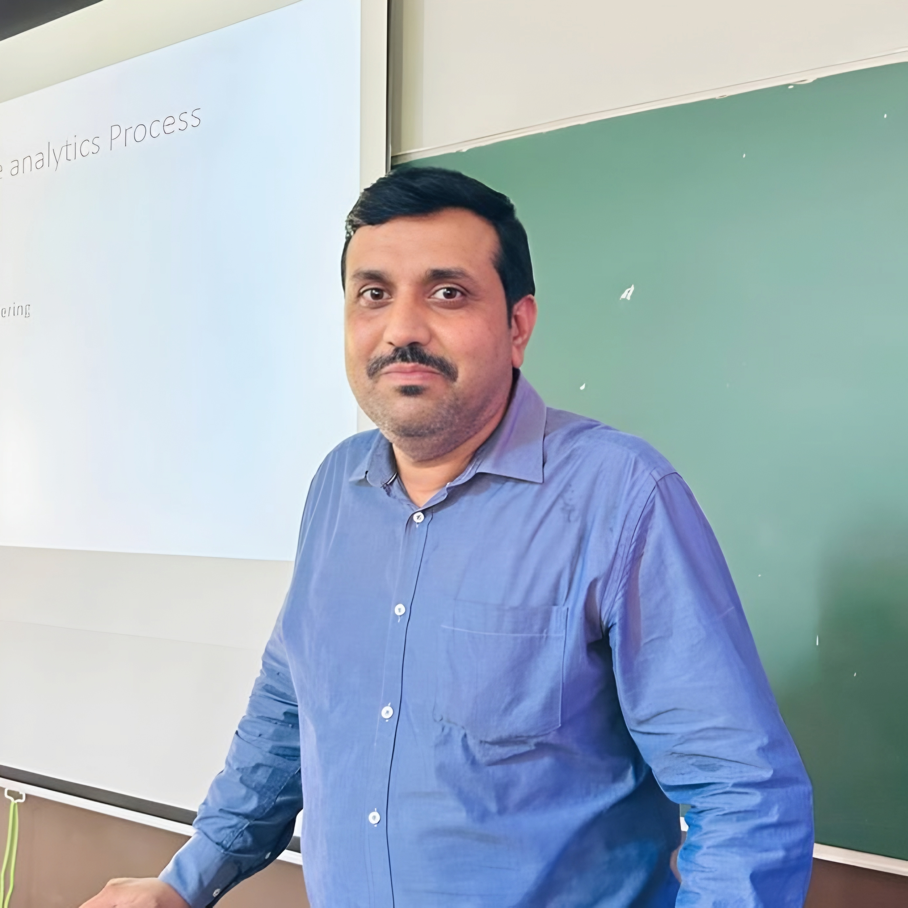
Mr. Manjunatha H T
Assistant Professor
MCA (Ph.D)
Mr. Manjunatha H T is an accomplished Assistant Professor with over 16 years of teaching and 8 years of research experience in Computer Science, currently serving at JNN College of Engineering, Shivamogga . He has strong expertise in Artificial Intelligence, Machine Learning, Computer Vision, and Data Analytics, with multiple publications in reputed conferences and journals. He has guided 170+ postgraduate and 20+ undergraduate projects while actively contributing to curriculum development and academic leadership. With ongoing Ph.D. research and a commitment to innovation, he focuses on delivering research-driven and practical learning experiences.
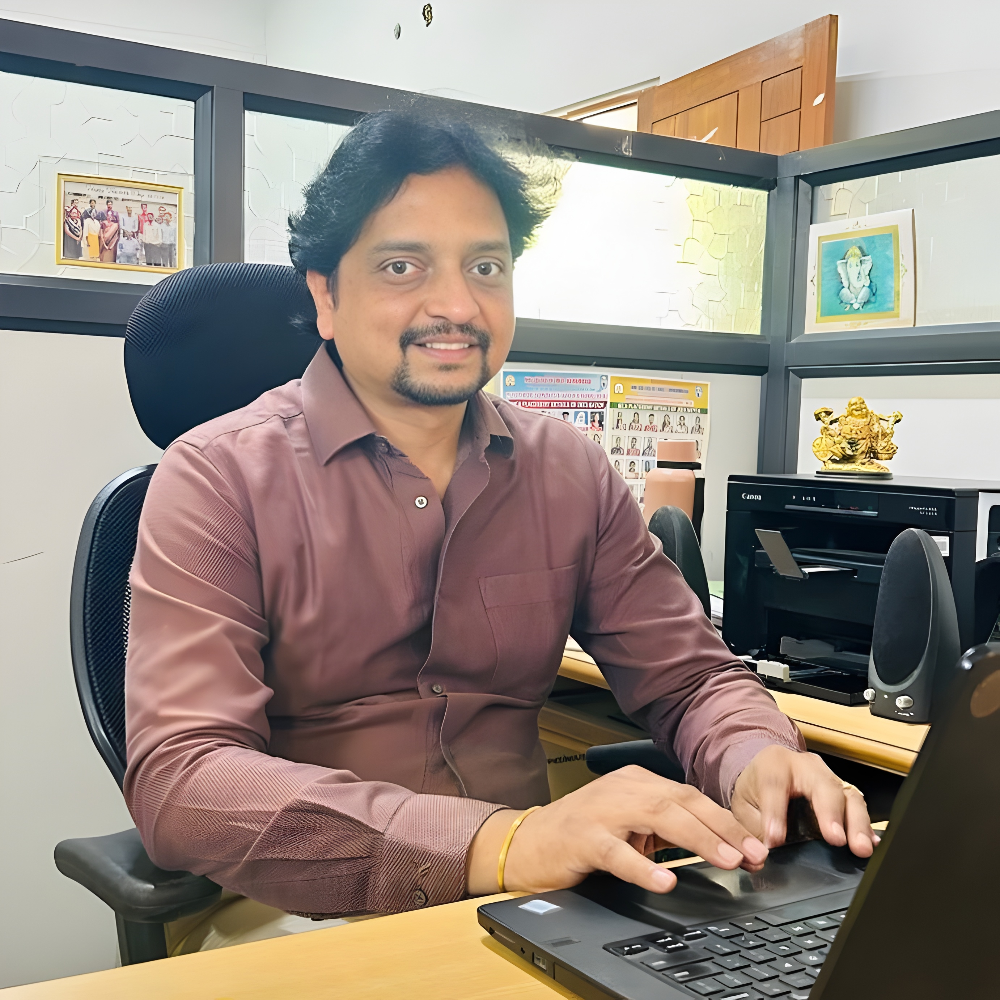
Mr. Arun Kumar K L
Assistant Professor
MCA(Ph.D)
Mr. Arun Kumar K L is a is a highly experienced Assistant Professor with over 15 years of expertise in teaching, research, and academic coordination in Computer Science . He currently serves at JNN College of Engineering, Shivamogga, and plays a key role in innovation as Project Manager of the Center for Innovation & Entrepreneurship (CIE) and Coordinator of the Institution’s Innovation Council (IIC). With strong research interests in Artificial Intelligence, Machine Learning, and Computer Vision, he has published numerous papers and mentored over 50 postgraduate projects. He is committed to fostering innovation, entrepreneurship, and research-driven learning among students.
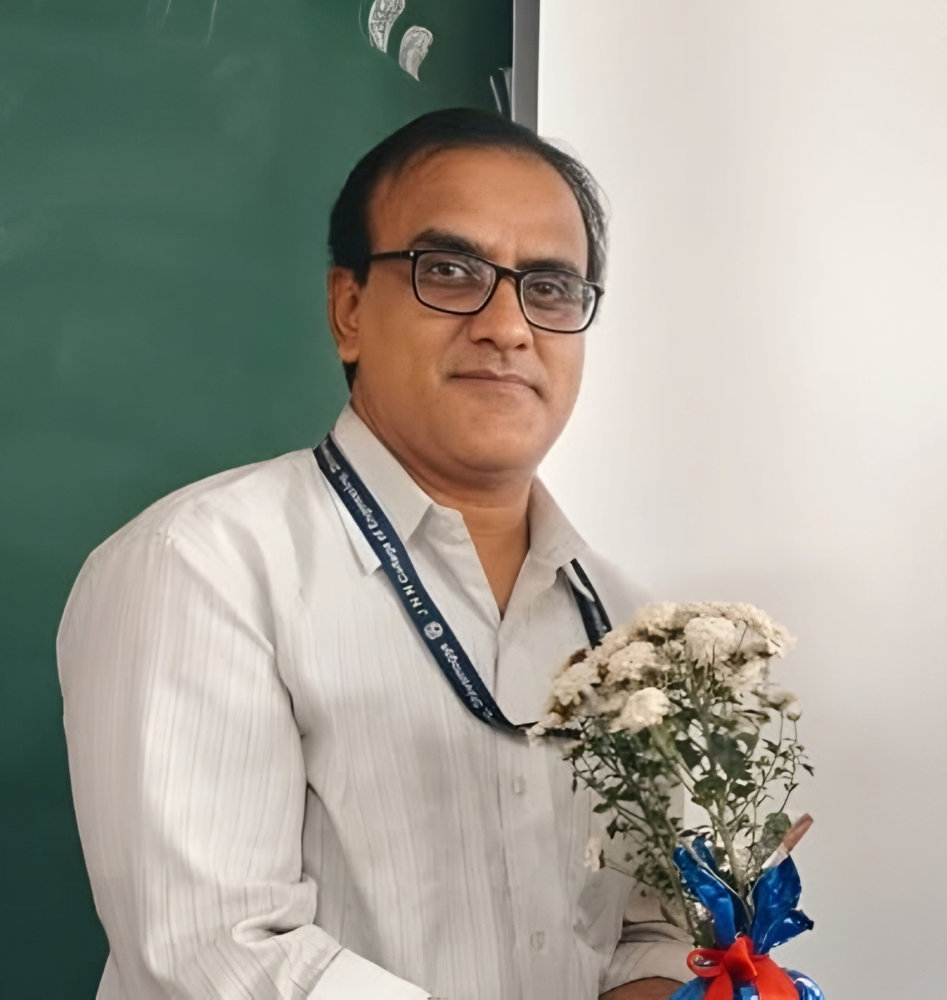
Mr. Adarsh J Mahendrakar
Assistant Professor
MCA(Ph.D)
Mr. Adarsh M J is an experienced Assistant Professor in Computer Science with over a decade of academic expertise, currently serving at JNN College of Engineering, Shivamogga . He has a strong background in subjects such as Data Structures, Machine Learning, DBMS, and Software Engineering, along with active involvement in research and publications. He has guided 60+ postgraduate projects and contributed significantly through workshops, FDPs, and academic coordination roles. With ongoing Ph.D. research and a commitment to continuous learning, he focuses on delivering practical, research-oriented education to students.
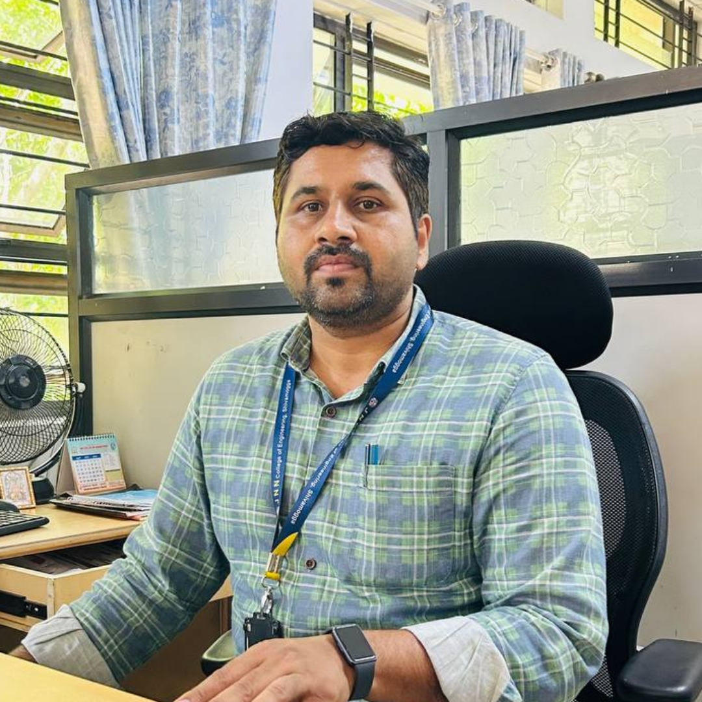
Mr. Prashanth Ankalkoti
Assistant Professor
MCA(Ph.D)
Mr. Prashanth Ankalkoti is a dedicated and passionate Assistant Professor with over 2 years of experience in teaching Computer Science. He excels at creating engaging learning environments that promote both academic excellence and personal growth. With a strong foundation in programming languages, he consistently stays updated with the latest industry trends. He is committed to delivering relevant, practical, and effective education to his students while supporting their overall development.
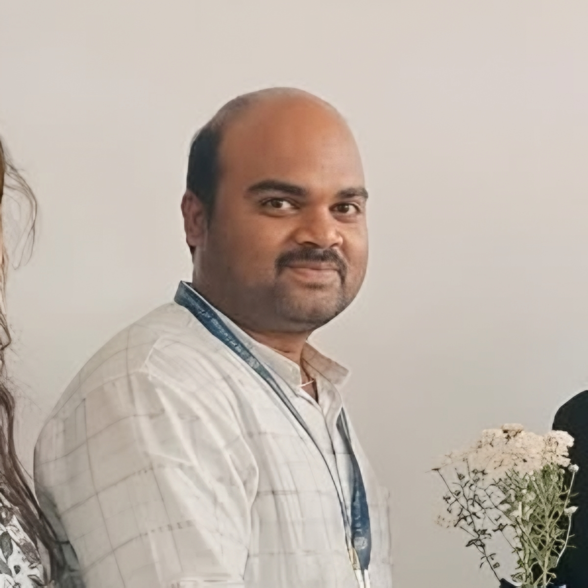
Dr. Sampath Kumar S
Assistant Professor
MCA, Ph.D
Dr. Sampath Kumar S is a dedicated Assistant Professor in Computer Science with extensive academic and research experience, currently associated with JNNCE, Shivamogga . He has a strong background in machine learning, image processing, and cybersecurity, supported by multiple publications in reputed journals and conferences. With hands-on expertise in SOC operations, SIEM tools, and modern security technologies, he combines practical knowledge with teaching excellence. He is committed to fostering innovation, research-driven learning, and technical skill development among students.
Ms. Amrutha M
Assistant Professor
MCA,UGC-NET,(Ph.D)
Ms. Amrutha is a dedicated and passionate Assistant Professor with over 2 years of experience in teaching Computer Science. She excels at creating engaging learning environments that promote both academic excellence and personal growth. With a strong foundation in programming languages, she consistently stays updated with the latest industry trends. She is committed to delivering relevant, practical, and effective education to her students while supporting their overall development.
Technical and Supporting Staff
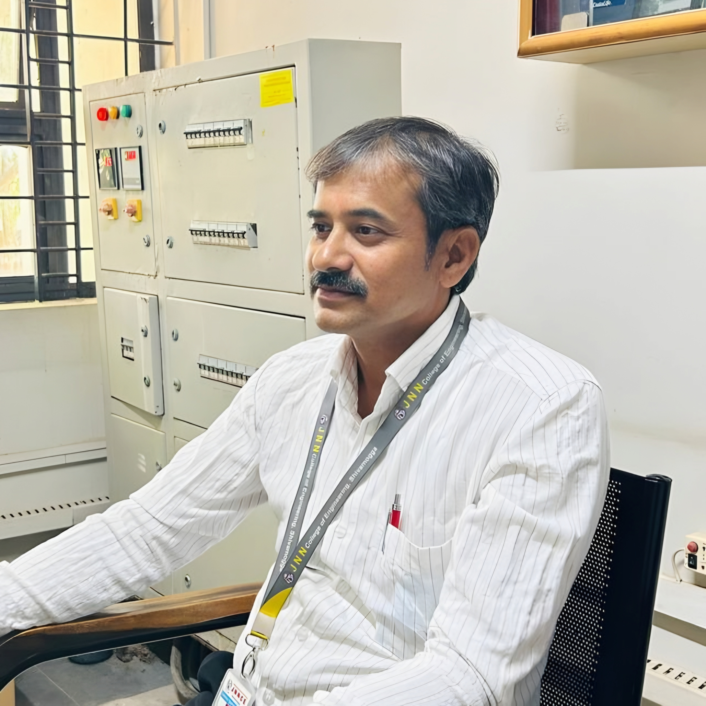
Mr. Suresh G N
Instructor
Technical Staff
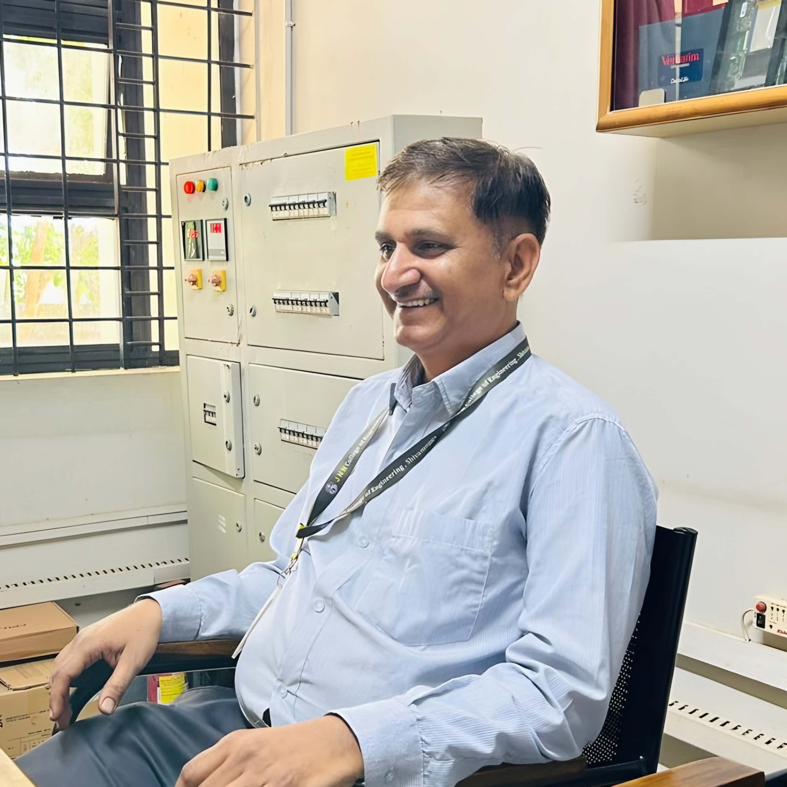
Mr. Sudhir Nadig
Instructor
Technical Staff

Mr. Nagaraja A U
Attender (Jr. Sc.)
Supporting Staff